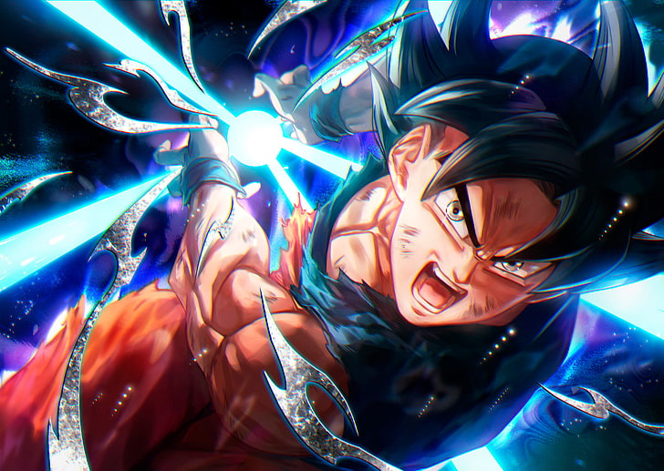

DRANGON BALL
Dragon Ball (en japonés :ド ラ ゴ ン ボ ー ル, Hepburn : Doragon Bōru ) es una franquicia de medios japonesacreada por Akira Toriyama en 1984.
El manga inicial , escrito e ilustrado por Toriyama, fue serializado en Weekly Shōnen Jump de 1984 a 1995, con los 519 capítulos individuales.
recogido en 42volúmenes tankōbon por su editor Shueisha . Dragon Ball se inspiró originalmente en la novela clásica china del siglo XVI Journey to the West
combinada con elementos de las películas de artes marciales de Hong Kong.. La serie sigue las aventuras del protagonista, Son Goku , desde su infancia
hasta la edad adulta mientras entrena en artes marciales. Pasa su infancia lejos de la civilización hasta que conoce a una adolescente llamada Bulma
quien lo anima a unirse a su búsqueda para explorar el mundo en busca de los siete orbes conocidos como Dragon Balls, que convocan a un dragón que concede
deseos cuando se reúnen. A lo largo de su viaje, Goku hace varios otros amigos, se convierte en un hombre de familia, descubre su herencia alienígena y lucha
contra una amplia variedad de villanos, muchos de los cuales también buscan las Dragon Balls.
El manga de Toriyama fue adaptado y dividido en dos series de anime producidas por Toei Animation : Dragon Ball y Dragon Ball Z , que en conjunto se transmitieron
en Japón de 1986 a 1996. Además, el estudio ha desarrollado 20 largometrajes animados y tres especiales de televisión. como dos series de secuelas de anime tituladas
Dragon Ball GT (1996-1997) y Dragon Ball Super (2015-2018). De 2009 a 2015, una versión revisada de Dragon Ball Z se emitió en Japón bajo el título Dragon Ball Kai.,
como un recorte que sigue la historia del manga más fielmente al eliminar la mayor parte del material que aparece exclusivamente en el anime. Varias compañías han
desarrollado varios tipos de merchandising basados en la serie que conducen a una gran franquicia de medios que incluye películas, tanto animadas como de acción en vivo,
juegos de cartas coleccionables, numerosas figuras de acción, junto con varias colecciones de bandas sonoras y numerosos videojuegos . Dragon Ball se ha convertido en una
de las franquicias de medios más taquilleras de todos los tiempos.
Desde su lanzamiento, Dragon Ball se ha convertido en una de las series de manga y anime más exitosas de todos los tiempos, con el manga vendido en más de 40
países y el anime transmitido en más de 80 países. Los 42 volúmenes de tankōbon recopilados del manga han vendido más de 160 millones de copias en Japón, y se
estima que han vendido más de 250 a 300 millones de copias en todo el mundo, lo que la convierte en la tercera serie de manga más vendida de la historia. Los críticos
han elogiado el arte, la caracterización y el humor de la historia. Es ampliamente considerada como una de las series de manga más grandes e influyentes jamás realizadas
y muchos artistas de manga citan a Dragon Ball.como fuente de inspiración para sus propias obras ahora populares. El anime, particularmente Dragon Ball Z , también es muy
popular en todo el mundo y se considera uno de los más influyentes para impulsar la popularidad de la animación japonesa en la cultura occidental. Ha tenido un impacto
considerable en la cultura popular mundial , y ha inspirado a numerosos artistas, atletas, celebridades, cineastas, músicos y escritores de todo el mundo.
